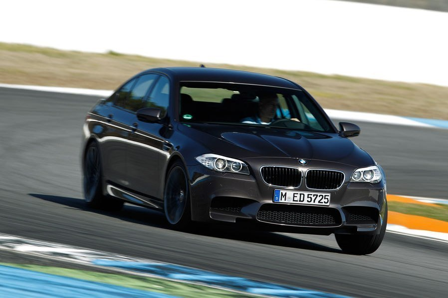
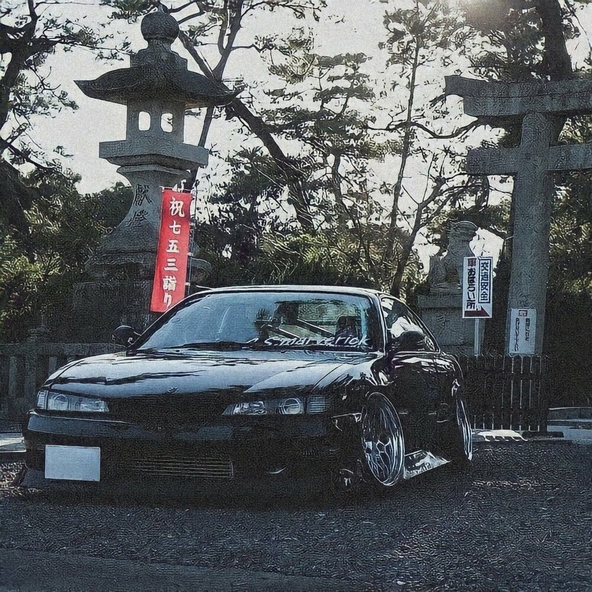

BMW AG (рус. Бэ-Эм-Вэ́[3]) — немецкий производитель автомобилей, мотоциклов, двигателей, а также велосипедов. Более 45 % акций принадлежит семье Квандт[4]. Председателем правления компании является Оливер Ципсе. Главный дизайнер — Йозеф Кабан[5]. В списке крупнейших публичных компаний мира Forbes Global 2000 за 2022 год BMW Group заняла 64-е место[6], а в списке Fortune Global 500 — 59-е место[7].
Девиз компании — «Freude am Fahren», с нем. — «С удовольствием за рулём». Для англоязычных стран был придуман также девиз «The Ultimate Driving Machine» (с англ. — «Идеальная машина для вождения»).

The Nissan 240SX is a sports compact car that was introduced to the North American market by Nissan in 1989 for the 1990 model year. It replaced the outgoing 200SX (S12) model. Most of the 240SXs were equipped with the 2.4-liter inline-four engine (KA24E from 1989 to 1990 and KA24DE from 1990 to 1998). The KA24E had a single overhead cam and the KA24DE had dual overhead cams. Two distinct generations of the 240SX, the S13 (1989–1994) the S14 (1994-1998) were produced, based on the Nissan S platform.
The 240SX is closely related to other S platform based vehicles, such as the Japanese-market Silvia and 180SX, and the European-market 200SX. Although their names are similar, the 240SX is unrelated to the 240Z or the 280ZX.
The 240SX is known for its popularity within drifting and tuner culture. However, due to the popularity of the S-chassis in drifting and related competitions, prices for vehicles and parts have greatly increased due to higher demand. This problem is sometimes known as "drift tax".[1]